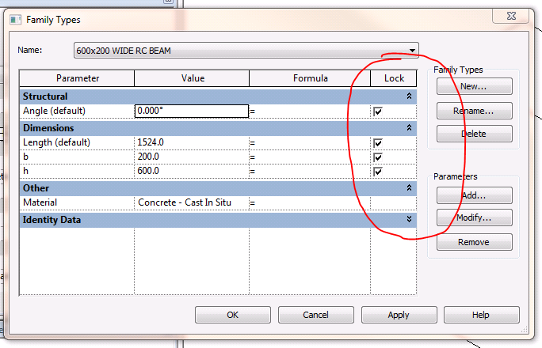

Setting a Locked Parameter
I arrived back in Europe and am still working through my pile of email. Here is another interesting tidbit that arose in the course of some correspondence with Anthony Forlong, Associate and CAD Manager at Clendon Burns & Park Ltd over the past few days:
Question: I've written an application that lets our users search our network and insert Revit families and load types from type catalogues. To help increase performance I have been using the duplicate method if the family exists, and then setting the parameters to their values from the type catalogue.
I am facing the following problem: there doesn't seem to be a method for setting locked parameters in the document. Is that correct? The call to the Set method fails.
The following user interface dialogue provides access to the parameter locking:

If I manually clear the check box, my function works fine. Is there away to set the parameter when it is ticked?
Answer: The following Revit 2011 API FamilyManager methods should work for this case. The documentation states that they work for Conceptual Mass and Curtain Panel families. My colleague Phil Xia tried other families and found that they worked there as well:
- IsParameterLockable: For Conceptual Mass and Curtain Panel families, indicate whether the specified parameter can be locked.
- IsParameterLocked: For Conceptual Mass and Curtain Panel families, indicate whether the specified dimension-driving parameter is locked.
- SetParameterLocked: For Conceptual Mass and Curtain Panel families, lock or unlock a dimension-driving parameter.
Thanks to Anthony and Phil for raising and clarifying this issue!